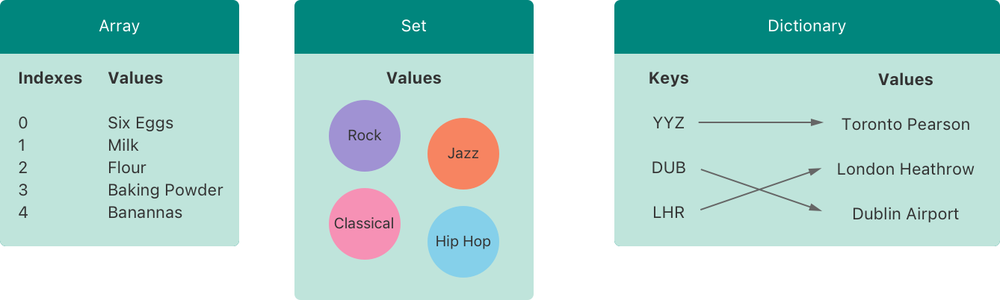

Collection Types¶ コレクション型¶
Swift provides three primary collection types, known as arrays, sets, and dictionaries, for storing collections of values. Arrays are ordered collections of values. Sets are unordered collections of unique values. Dictionaries are unordered collections of key-value associations. スウィフトは３つの主要なコレクション型を提供します、それらは配列、集合、そして辞書として知られ、値の集まり（コレクション）をしまっておくためのものです。配列は、順番をつけられた値のコレクションです。集合は、順番をつけられないそれぞれが異なった値のコレクションです。辞書は、「キーと値」を結びつけたものの順番をつけられないコレクションです。
Arrays, sets, and dictionaries in Swift are always clear about the types of values and keys that they can store. This means that you cannot insert a value of the wrong type into a collection by mistake. It also means you can be confident about the type of values you will retrieve from a collection. スウィフトの配列、集合、そして辞書は、それらが格納できる値とキーの型について常に明確です。これは、あなたが間違った型の値を誤ってあるコレクションの中に入れることが不可能なことを意味します。それはまた、あなたがコレクションから取り出す値の型をあなたが確信できることを意味します。
Note 注意
Swift’s array, set, and dictionary types are implemented as generic collections. For more about generic types and collections, see Generics. スウィフトの配列、集合、そして辞書型は、総称体のコレクションとして実装されます。総称体型とコレクションに関する詳細は「総称体」を見てください。
Mutability of Collections¶ コレクションの可変性¶
If you create an array, a set, or a dictionary, and assign it to a variable, the collection that is created will be mutable. This means that you can change (or mutate) the collection after it’s created by adding, removing, or changing items in the collection. If you assign an array, a set, or a dictionary to a constant, that collection is immutable, and its size and contents cannot be changed. あなたがある配列、集合、または辞書を作成して、それをある変数に代入したならば、作成されたコレクションは可変となります。これは、あなたがコレクションを変更する（または変化させる）ことが、それが作成された後にそのコレクション中の項目を追加、削除、または変更することによって可能なのを意味します。あなたがある配列、集合、または辞書をある定数に代入したならば、そのコレクションは不変になります、そしてそれの大きさと内容は変更されることが出来ません。
Note 注意
It is good practice to create immutable collections in all cases where the collection does not need to change. Doing so makes it easier for you to reason about your code and enables the Swift compiler to optimize the performance of the collections you create. そのコレクションを変更する必要がないすべての場合において不変のコレクションを作成することは良い習慣です。そうすることは、あなたがあなたのコードについて推論するのをより容易にして、スウィフトのコンパイラにあなたが作成するコレクションの運用性能を最適なものにすることを可能にします。
Arrays¶ 配列¶
An array stores values of the same type in an ordered list. The same value can appear in an array multiple times at different positions. 配列は、同じ型の値を順序リストに保管します。同じ値は、ひとつの配列の中で複数回異なる位置で現れることができます。
Note 注意
Swift’s Array type is bridged to Foundation’s NSArray class.
スウィフトのArray型はFoundationのNSArrayクラスにブリッジ（橋渡し）されます。
For more information about using Array with Foundation and Cocoa, see Bridging Between Array and NSArray.
FoundationとCocoaとともにArrayを使うことについてのさらなる情報として、ArrayとNSArrayの間のブリッジを見てください。
Array Type Shorthand Syntax¶ 配列型の短縮形構文¶
The type of a Swift array is written in full as Array<Element>, where Element is the type of values the array is allowed to store. You can also write the type of an array in shorthand form as [Element]. Although the two forms are functionally identical, the shorthand form is preferred and is used throughout this guide when referring to the type of an array.
スウィフト配列の型は、完全にはArray<Element>のように書かれます、そこにおいてElementはその配列が格納するのを許される値の型です。あなたは、また、短縮形形式で配列の型を[Element]のように書くことができます。２つの書式は機能的に同一であるけれども、短縮形がむしろ好まれ、このガイドを通して配列の型に言及するとき使われます。
Creating an Empty Array¶ 空の配列の作成¶
You can create an empty array of a certain type using initializer syntax: あなたは、特定の型の空の配列をイニシャライザ構文を使って作成できます：
- var someInts = [Int]()
- print("someInts is of type [Int] with \(someInts.count) items.")
- // Prints "someInts is of type [Int] with 0 items."（「someIntsは型[Int]で0項目を持ちます。」を出力します）
Note that the type of the someInts variable is inferred to be [Int] from the type of the initializer.
someInts変数の型が、そのイニシャライザの型から[Int]であると推測される点に注意してください。
Alternatively, if the context already provides type information, such as a function argument or an already typed variable or constant, you can create an empty array with an empty array literal, which is written as [] (an empty pair of square brackets):
代わりに、前後関係がすでに型の情報を、例えば関数の引数またはすでに型指定された変数や定数などを提供するならば、あなたは空の配列を空の配列リテラル、[]（１対の空の角括弧）のように書かれるものでつくることができます：
- someInts.append(3)
- // someInts now contains 1 value of type Int（someIntsは、現在は型Intの値ひとつを含みます）
- someInts = []
- // someInts is now an empty array, but is still of type [Int]（someIntsは、現在は空の配列です、しかし依然として型[Int]です）
Creating an Array with a Default Value¶ 配列を１つの初期値で作成する¶
Swift’s Array type also provides an initializer for creating an array of a certain size with all of its values set to the same default value. You pass this initializer a default value of the appropriate type (called repeating): and the number of times that value is repeated in the new array (called count):
スウィフトのArray型はまた、その値の全てが提供された同じ初期値に設定される、特定の大きさの配列をつくるためにイニシャライザを提供します。あなたは、このイニシャライザに対して、適切な型のひとつの初期値（repeatingと呼ばれます）、そしてその値が新しい配列の中で繰り返される回数（countと呼ばれます）とを渡します：
- var threeDoubles = Array(repeating: 0.0, count: 3)
- // threeDoubles is of type [Double], and equals [0.0, 0.0, 0.0]（threeDoublesは、型[Double]で、 [0.0, 0.0, 0.0]に等しいです）
Creating an Array by Adding Two Arrays Together¶ ２つの配列を一緒にすることで１つの配列を作成する¶
You can create a new array by adding together two existing arrays with compatible types with the addition operator (+). The new array’s type is inferred from the type of the two arrays you add together:
あなたは、互換性を持つ型の２つの既存の配列を加算演算子（+）を使って一緒に加えることによって、新しい配列をつくることができます。新しい配列の型は、あなたが一緒に加える２つの配列の型から推論されます：
- var anotherThreeDoubles = Array(repeating: 2.5, count: 3)
- // anotherThreeDoubles is of type [Double], and equals [2.5, 2.5, 2.5]（anotherThreeDoublesは、型[Double]で、[2.5, 2.5, 2.5]に等しいです）
- var sixDoubles = threeDoubles + anotherThreeDoubles
- // sixDoubles is inferred as [Double], and equals [0.0, 0.0, 0.0, 2.5, 2.5, 2.5]（sixDoublesは、[Double]と推論され、 [0.0, 0.0, 0.0, 2.5, 2.5, 2.5]に等しいです）
Creating an Array with an Array Literal¶ 配列を配列リテラルで作成する¶
You can also initialize an array with an array literal, which is a shorthand way to write one or more values as an array collection. An array literal is written as a list of values, separated by commas, surrounded by a pair of square brackets: あなたはまた配列リテラルを使って配列を初期化することができます、それは１つ以上の値を配列コレクションとして書くための短縮形の方法です。配列リテラルは、一対の角括弧に囲まれて、コンマで区切られる値のリストとして書かれます：
- [value 1, value 2, value 3]
The example below creates an array called shoppingList to store String values:
下の例は、String値を格納するshoppingListと呼ばれる配列をつくります：
- var shoppingList: [String] = ["Eggs", "Milk"]
- // shoppingList has been initialized with two initial items（shoppingListが、２つの最初の項目で初期化された）
The shoppingList variable is declared as “an array of string values”, written as [String]. Because this particular array has specified a value type of String, it is allowed to store String values only. Here, the shoppingList array is initialized with two String values ("Eggs" and "Milk"), written within an array literal.
shoppingList変数は、「String値の配列」として宣言され、[String]のように書かれます。この特定の配列がStringの値型を指定したので、それが貯蔵を許可されるのはString値のみです。ここで、shoppingList配列は、配列リテラル内に書かれる２つのString値（"Eggs"と"Milk"）で初期化されます。
Note 注意
The shoppingList array is declared as a variable (with the var introducer) and not a constant (with the let introducer) because more items are added to the shopping list in the examples below.
shoppingList配列は、変数として（var導入子を使って）宣言されます、定数（let導入子を使って）ではなく、なぜならより多くの項目が下記の例で購入品目リストに加えられるからです。
In this case, the array literal contains two String values and nothing else. This matches the type of the shoppingList variable’s declaration (an array that can only contain String values), and so the assignment of the array literal is permitted as a way to initialize shoppingList with two initial items.
この場合、配列リテラルは、２つのString値を含んでいて他には何も含みません。これはshoppingList変数の宣言（String値を含むことだけができる配列）の型に合致します、それでこの配列リテラルの代入は、２つの最初の項目でshoppingListを初期化するためのやり方として認められます。
Thanks to Swift’s type inference, you don’t have to write the type of the array if you’re initializing it with an array literal containing values of the same type. The initialization of shoppingList could have been written in a shorter form instead:
スウィフトの型推論のおかげで、あなたが同じ型の値を含んでいる配列リテラルでそれを初期化しているのならば、あなたは配列の型を書く必要はありません。shoppingListの初期化は、前の代わりにより短い形式に書かれることもできます：
- var shoppingList = ["Eggs", "Milk"]
Because all values in the array literal are of the same type, Swift can infer that [String] is the correct type to use for the shoppingList variable.
この配列リテラルの値の全てが同じ型であるので、スウィフトは[String]がshoppingList変数のために利用されるのに正しい型であると推測することができます。
Accessing and Modifying an Array¶ 配列へのアクセスと変更¶
You access and modify an array through its methods and properties, or by using subscript syntax. あなたは、そのメソッドとプロパティを通して、または添え字構文を使うことによって、配列にアクセスして修正します。
To find out the number of items in an array, check its read-only count property:
ある配列の中の項目の数を知るために、その読み出し専用のcountプロパティを調べてください：
- print("The shopping list contains \(shoppingList.count) items.")
- // Prints "The shopping list contains 2 items."（「買い物リストは２つの項目を含みます。」を出力します）
Use the Boolean isEmpty property as a shortcut for checking whether the count property is equal to 0:
ブールのisEmptyプロパティをcountプロパティが0と等しいかどうかを調べる近道として使ってください：
- if shoppingList.isEmpty {
- print("The shopping list is empty.")
- } else {
- print("The shopping list is not empty.")
- }
- // Prints "The shopping list is not empty."（「買い物リストは空ではありません。」を出力します）
You can add a new item to the end of an array by calling the array’s append(_:) method:
あなたは、配列のappend(_:)メソッドを呼ぶことによって配列の終わりに新しい項目を加えることができます：
- shoppingList.append("Flour")
- // shoppingList now contains 3 items, and someone is making pancakes（shoppingListは現在３つの項目を含みます、そして誰かはパンケーキを作っています）
Alternatively, append an array of one or more compatible items with the addition assignment operator (+=):
あるいはまた、互換性を持つ１つ以上の項目からなる配列を、追加代入演算子（+=）を使って加えることができます：
- shoppingList += ["Baking Powder"]
- // shoppingList now contains 4 items（shoppingListは、現在４つの項目を含みます）
- shoppingList += ["Chocolate Spread", "Cheese", "Butter"]
- // shoppingList now contains 7 items（shoppingListは、現在７つの項目を含みます）
Retrieve a value from the array by using subscript syntax, passing the index of the value you want to retrieve within square brackets immediately after the name of the array: 添え字構文を使うことで、ひとつの値をこの配列から取り出してください、あなたが取り出したい値の添え字（インデックス、指数）を、配列の名前の直後の角括弧内に入れて渡してください：
- var firstItem = shoppingList[0]
- // firstItem is equal to "Eggs"（firstItemは、「Eggs」と等しいです）
Note 注意
The first item in the array has an index of 0, not 1. Arrays in Swift are always zero-indexed.
配列での最初の項目が、1ではなく、0のインデックスを持ちます。スウィフトの配列は、常に０からのインデックスをつけられます。
You can use subscript syntax to change an existing value at a given index: あなたは、添え字構文を使って、与えられたインデックス位置にある既存の値を変えることができます：
- shoppingList[0] = "Six eggs"
- // the first item in the list is now equal to "Six eggs" rather than "Eggs"（リストの中の最初の項目は、現在「６つの卵」と等しいです、「卵」ではなく）
When you use subscript syntax, the index you specify needs to be valid. For example, writing shoppingList[shoppingList.count] = "Salt" to try to append an item to the end of the array results in a runtime error.
あなたが添え字構文を使う時、あなたが指定するインデックスは有効である必要があります。例えば、shoppingList[shoppingList.count] = "Salt"と書くことでこの配列の終わりに項目を加えようとするのは実行時エラーという結果になります。
You can also use subscript syntax to change a range of values at once, even if the replacement set of values has a different length than the range you are replacing. The following example replaces "Chocolate Spread", "Cheese", and "Butter" with "Bananas" and "Apples":
あなたは、また、添え字構文を使って、ある範囲の値を一度に変えることができます、たとえ代替の値一式があなたが置き換えている範囲と異なる長さを持つとしてもです。以下の例は、"Chocolate Spread"、"Cheese"、そして"Butter"を、"Bananas"および"Apples"と取り替えます：
- shoppingList[4...6] = ["Bananas", "Apples"]
- // shoppingList now contains 6 items（shoppingListは、現在６つの項目を含みます）
To insert an item into the array at a specified index, call the array’s insert(_:at:) method:
ある項目を配列の中へ指定されたインデックスで差し入れるために、配列のinsert(_:at:)メソッドを呼んでください：
- shoppingList.insert("Maple Syrup", at: 0)
- // shoppingList now contains 7 items（shoppingListは、現在７つの項目を含みます）
- // "Maple Syrup" is now the first item in the list（「メープルシロップ」が、現在はリストの最初の項目です）
This call to the insert(_:at:) method inserts a new item with a value of "Maple Syrup" at the very beginning of the shopping list, indicated by an index of 0.
insert(_:at:)メソッドへのこの呼び出しは、"Maple Syrup"の値をもつ新しい項目を、0のインデックスによって指し示される、買い物リストのまさしくその開始位置で差し入れます。
Similarly, you remove an item from the array with the remove(at:) method. This method removes the item at the specified index and returns the removed item (although you can ignore the returned value if you do not need it):
同じように、あなたはremove(at:)メソッドを使って配列から項目を取り除きます。このメソッドは、指定されたインデックスでの項目を取り除いて、取り除かれた項目を返します（けれども、あなたがそれを必要としないならば、返された値を無視することができます）：
- let mapleSyrup = shoppingList.remove(at: 0)
- // the item that was at index 0 has just been removed（インデックス0であった項目が、ちょうど今取り除かれました）
- // shoppingList now contains 6 items, and no Maple Syrup（shoppingListは、現在６つの項目、メープルシロップ以外を含みます）
- // the mapleSyrup constant is now equal to the removed "Maple Syrup" string（定数mapleSyrupは、現在は削除された「メープルシロップ」文字列と等しいです）
Note 注意
If you try to access or modify a value for an index that is outside of an array’s existing bounds, you will trigger a runtime error. You can check that an index is valid before using it by comparing it to the array’s count property. The largest valid index in an array is count - 1 because arrays are indexed from zero—however, when count is 0 (meaning the array is empty), there are no valid indexes.
あなたが配列のもつ存在する境界の外にあるインデックスに対する値にアクセスまたは変更しようとするならば、あなたは実行時エラーの引き金を引くことになります。あなたはあるインデックスが有効なことを、それを配列のcountプロパティと比較することによって、それを使う前に確認することができます。ある配列の中の最も大きい有効なインデックスはcount - 1です、なぜなら配列はゼロからインデックスをつけられるからです — しかしながら、countが0である時（配列がからであるのを意味しています）、有効なインデックスは全然ありません。
Any gaps in an array are closed when an item is removed, and so the value at index 0 is once again equal to "Six eggs":
項目が取り外されるとき、配列でのどんな隙間でも閉じられます、なのでインデックス0での値はふたたび"Six eggs"と等しいです：
- firstItem = shoppingList[0]
- // firstItem is now equal to "Six eggs"（firstItemは、現在「６つの卵」と等しいです）
If you want to remove the final item from an array, use the removeLast() method rather than the remove(at:) method to avoid the need to query the array’s count property. Like the remove(at:) method, removeLast() returns the removed item:
あなたが配列から最後の項目を取り除きたいならば、removeLast()メソッドをremove(at:)メソッドよりむしろ使用して、配列のcountプロパティについてたずねる必要を避けるようにしてください。removeAtIndex(_:)メソッドのように、remove(at:)は取り除かれた項目を返します：
- let apples = shoppingList.removeLast()
- // the last item in the array has just been removed（配列での最後の項目が、ちょうど今取り除かれました）
- // shoppingList now contains 5 items, and no apples（shoppingListは現在は５つの項目を含みます、そして「リンゴ」は含みません）
- // the apples constant is now equal to the removed "Apples" string（apples定数は、現在は削除された文字列「リンゴ」と等しいです）
Iterating Over an Array¶ 配列じゅうを繰り返す¶
You can iterate over the entire set of values in an array with the for-in loop:
あなたは、for-inループを使って配列中の値ひとそろい全部に渡って繰り返すことができます：
- for item in shoppingList {
- print(item)
- }
- // Six eggs（卵６つ）
- // Milk（牛乳）
- // Flour（小麦粉）
- // Baking Powder（膨らし粉）
- // Bananas（バナナ）
If you need the integer index of each item as well as its value, use the enumerated() method to iterate over the array instead. For each item in the array, the enumerated() method returns a tuple composed of an integer and the item. The integers start at zero and count up by one for each item; if you enumerate over a whole array, these integers match the items’ indices. You can decompose the tuple into temporary constants or variables as part of the iteration:
あなたがその値のみならず各項目の整数インデックスを必要とするならば、代わりにenumerated()メソッドを配列じゅうを繰り返し処理するのに使ってください。この配列の各項目に対して、enumerated()メソッドは、整数とその項目から成るひとつのタプルを返します。その整数はゼロから始めて各項目に対して１ずつ数えていきます；あなたが配列全体をすべて列挙するならば、それらの整数はそれら項目のもつインデックスと一致します。あなたは、繰り返しの一部としてそのタプルを一時的な定数または変数に分解することができます：
- for (index, value) in shoppingList.enumerated() {
- print("Item \(index + 1): \(value)")
- }
- // Item 1: Six eggs（項目１：６つの卵）
- // Item 2: Milk（項目２：牛乳）
- // Item 3: Flour（項目３：小麦粉）
- // Item 4: Baking Powder（項目４：膨らし粉）
- // Item 5: Bananas（項目５：バナナ）
For more about the for-in loop, see For-In Loops.
更にfor-inループについて、for-inループを見てください。
Sets¶ 集合¶
A set stores distinct values of the same type in a collection with no defined ordering. You can use a set instead of an array when the order of items is not important, or when you need to ensure that an item only appears once. 集合は、同じ型の異なった値をひとつのコレクションの中に決まった順序なしで格納します。あなたは、項目の順番が重要でないときに、またはあなたがひとつの項目がただ一度だけ現れることを確実にする必要があるときに、配列の代わりに集合を使うことができます。
Note 注意
Swift’s Set type is bridged to Foundation’s NSSet class.
スウィフトのSet型は、FoundationのNSSetクラスにブリッジ（橋渡し）されます。
For more information about using Set with Foundation and Cocoa, see Bridging Between Set and NSSet.
FoundationとCocoaとともにSetを使うことについてのさらなる情報として、SetとNSSetの間のブリッジを見てください。
Hash Values for Set Types¶ Set型のためのハッシュ値¶
A type must be hashable in order to be stored in a set—that is, the type must provide a way to compute a hash value for itself. A hash value is an Int value that is the same for all objects that compare equally, such that if a == b, it follows that a.hashValue == b.hashValue.
ある型は、集合のキー型として使われるためにハッシュ化される必要があります ― すなわち、その型はそれ自身でハッシュ値を計算するためのある方法を提供しなければなりません。あるハッシュ値はあるひとつのInt値です、それは同等とみなされるすべてのオブジェクトに対して同じものです、たとえばa == bのように、それはa.hashValue == b.hashValueで導き出されます。
All of Swift’s basic types (such as String, Int, Double, and Bool) are hashable by default, and can be used as set value types or dictionary key types. Enumeration case values without associated values (as described in Enumeration) are also hashable by default.
スウィフトの基本の型の全て（String、Int、Double、そしてBoolなど）は、特に何もしなくてもハッシュ化されます、そして集合の値型または辞書のキー型として使われることができます。関連値なしでの列挙ケース節の値（列挙で記述されます）もまた、そのままでハッシュ化できます。
Note 注意
You can use your own custom types as set value types or dictionary key types by making them conform to the Hashable protocol from Swift’s standard library. Types that conform to the Hashable protocol must provide a gettable Int property called hashValue. The value returned by a type’s hashValue property is not required to be the same across different executions of the same program, or in different programs.
あなたは、あなた独自のあつらえの型を集合の値型または辞書のキー型として使用することが、それらをスウィフトの標準ライブラリからのHashableプロトコルに適合させることで可能です。Hashableプロトコルに適合する型は、取得可能なIntプロパティ、hashValueと呼ばれるものを提供しなければなりません。ある型のhashValueプロパティによって返される値は、同じプログラムの、または異なるプログラムでの、異なる実行にまたがって同じであることを要求されません、
Because the Hashable protocol conforms to Equatable, conforming types must also provide an implementation of the equals operator (==). The Equatable protocol requires any conforming implementation of == to be an equivalence relation. That is, an implementation of == must satisfy the following three conditions, for all values a, b, and c:
HashableプロトコルがEquatableに準拠することから、準拠する型はまた同等演算子（==）のあるひとつの実装を提供しなければなりません。Equatableプロトコルは、==のどんな準拠実装もひとつの同等性関係であることを要求します。すなわち、==の実装は、以下の３つの条件をa、b、およびcすべての値に対して満足させなければなりません。
a == a(Reflexivity)a == a（反射性）a == bimpliesb == a(Symmetry)a == bがb == aを意味する（対称性）a == b && b == cimpliesa == c(Transitivity)
For more information about conforming to protocols, see Protocols. プロトコルに準拠することについての更なる情報は、プロトコルを見てください。
Set Type Syntax¶ Set型構文¶
The type of a Swift set is written as Set<Element>, where Element is the type that the set is allowed to store. Unlike arrays, sets do not have an equivalent shorthand form.
あるスウィフト集合の型は、Set<Element>のように書かれます、そこにおいてElementはその集合が格納することを許される型です。配列とは違い、集合は相当する短縮形を持ちません。
Creating and Initializing an Empty Set¶ 空の集合の作成と初期化¶
You can create an empty set of a certain type using initializer syntax: あなたは特定の型の空の集合を初期化構文を使って作成することができます：
- var letters = Set<Character>()
- print("letters is of type Set<Character> with \(letters.count) items.")
- // Prints "letters is of type Set<Character> with 0 items."（「lettersは型Set<Character>で０項目を持ちます。」を出力します）
Note 注意
The type of the letters variable is inferred to be Set<Character>, from the type of the initializer.
letters変数の型は、そのイニシャライザの型から、Set<Character>と推論されます。
Alternatively, if the context already provides type information, such as a function argument or an already typed variable or constant, you can create an empty set with an empty array literal: あるいはまた、関数の引数や既に型付けされた変数や定数のように、文脈がすでに型情報を提供するならば、あなたは空の集合を空の配列リテラルで作成することができます：
- letters.insert("a")
- // letters now contains 1 value of type Character（lettersは型Characterの値を１つ持ちます）
- letters = []
- // letters is now an empty set, but is still of type Set<Character>（lettersは現在空の集合です、しかし依然として型Set<Character>です）
Creating a Set with an Array Literal¶ 集合を配列リテラルで作成する¶
You can also initialize a set with an array literal, as a shorthand way to write one or more values as a set collection. あなたはまた、１つ以上の値を集合コレクションとして書くための省略法として、集合を配列リテラルを使って初期化することができます、
The example below creates a set called favoriteGenres to store String values:
以下の例は、favoriteGenresと呼ばれる集合をString値を格納するために作成します：
- var favoriteGenres: Set<String> = ["Rock", "Classical", "Hip hop"]
- // favoriteGenres has been initialized with three initial items（favoriteGenresは３つの初期項目で初期化されています）
The favoriteGenres variable is declared as “a set of String values”, written as Set<String>. Because this particular set has specified a value type of String, it is only allowed to store String values. Here, the favoriteGenres set is initialized with three String values ("Rock", "Classical", and "Hip hop"), written within an array literal.
favoriteGenres変数は、Set<String>のように書かれ、「String値の集合」として宣言されます。この問題の集合が明確に指定されたStringの値型を持つことから、それはString値を格納することだけが許されます。ここでは、favoriteGenres集合は、配列リテラル内に書かれる、３つのString値（"Rock"、"Classical"、そして"Hip hop"）で初期化されます。
Note 注意
The favoriteGenres set is declared as a variable (with the var introducer) and not a constant (with the let introducer) because items are added and removed in the examples below.
favoriteGenres集合は、定数（let導入子を使って）ではなく変数として（var導入子を使って）宣言されます、項目が下の例で加えられたり取り除かれたりするためです。
A set type cannot be inferred from an array literal alone, so the type Set must be explicitly declared. However, because of Swift’s type inference, you don’t have to write the type of the set’s elements if you’re initializing it with an array literal that contains values of just one type. The initialization of favoriteGenres could have been written in a shorter form instead:
集合の型は配列リテラルのみでは推論されることができません、それで型Setが明示的に宣言されなければなりません。しかしながら、スウィフトのもつ型推論のために、あなたは集合の持つ要素それらの型を書くことは、あなたがそれをただ１つの型だけの値それらを含む配列リテラルを使って初期化しているならば、必要ありません。favoriteGenresの初期化は、代わりに次のような短い形式で書かれることができます：
- var favoriteGenres: Set = ["Rock", "Classical", "Hip hop"]
Because all values in the array literal are of the same type, Swift can infer that Set<String> is the correct type to use for the favoriteGenres variable.
配列リテラルの中の全ての値が同じ型であることから、スウィフトはSet<String>が正しい型であると推論することができ、favoriteGenres変数に使用します。
Accessing and Modifying a Set¶ 集合へのアクセスと変更¶
You access and modify a set through its methods and properties. あなたは集合へのアクセス及び変更をそれのメソッドとプロパティを通して行います。
To find out the number of items in a set, check its read-only count property:
集合の中の項目数を知るために、それの読み出し専用のcountプロパティを調べてください：
- print("I have \(favoriteGenres.count) favorite music genres.")
- // Prints "I have 3 favorite music genres."（「私には大好きな音楽ジャンルが３つあります。」を出力します）
Use the Boolean isEmpty property as a shortcut for checking whether the count property is equal to 0:
ブールのisEmptyプロパティをcountプロパティが0と等しいかどうかを調べる近道として使ってください：
- if favoriteGenres.isEmpty {
- print("As far as music goes, I'm not picky.")
- } else {
- print("I have particular music preferences.")
- }
- // Prints "I have particular music preferences."（「私には特定の音楽の好みがあります。」を出力します）
You can add a new item into a set by calling the set’s insert(_:) method:
あなたは新しい項目を集合に加えることが集合のinsert(_:)メソッドを呼ぶことによって行えます：
- favoriteGenres.insert("Jazz")
- // favoriteGenres now contains 4 items（favoriteGenresは現在４項目を含みます）
You can remove an item from a set by calling the set’s remove(_:) method, which removes the item if it’s a member of the set, and returns the removed value, or returns nil if the set did not contain it. Alternatively, all items in a set can be removed with its removeAll() method.
あなたはある項目を集合から取り除くことが集合のremove(_:)メソッドを呼ぶことによって行えます、それは、その項目をそれが集合のメンバーであるならば取り除きます、そして取り除かれた項目を返します、または集合がそれを含まないならばnilを返します。あるいはまた、集合の全ての項目はremoveAll()メソッドを使って取り除かれることができます。
- if let removedGenre = favoriteGenres.remove("Rock") {
- print("\(removedGenre)? I'm over it.")
- } else {
- print("I never much cared for that.")
- }
- // Prints "Rock? I'm over it."（「Rock？ もう済んだことさ（曲名？）。」を出力します）
To check whether a set contains a particular item, use the contains(_:) method.
ある集合が特定の項目を含むかどうか調べるために、contains(_:)メソッドを使ってください。
- if favoriteGenres.contains("Funk") {
- print("I get up on the good foot.")
- } else {
- print("It's too funky in here.")
- }
- // Prints "It's too funky in here."（「そりゃここじゃfunkyすぎる。」を出力します）
Iterating Over a Set¶ 集合全体を繰り返す¶
You can iterate over the values in a set with a for-in loop.
あなたは集合の中の値すべてに渡って繰り返しすることがfor-inループによって行えます。
- for genre in favoriteGenres {
- print("\(genre)")
- }
- // Classical
- // Jazz
- // Hip hop
For more about the for-in loop, see For-In Loops.
更にfor-inループについて、for-inループを見てください。
Swift’s Set type does not have a defined ordering. To iterate over the values of a set in a specific order, use the sorted() method, which returns the set’s elements as an array sorted using the < operator.
スウィフトのSet型は、決まった順番を持ちません。集合の中の値に特定の順番で繰り返すには、sorted()メソッドを使ってください、それは集合の要素を<演算子を使って格納される配列として返します。
- for genre in favoriteGenres.sorted() {
- print("\(genre)")
- }
- // Classical
- // Hip hop
- // Jazz
Performing Set Operations¶ 集合演算の実行¶
You can efficiently perform fundamental set operations, such as combining two sets together, determining which values two sets have in common, or determining whether two sets contain all, some, or none of the same values. あなたは効率的に基本的な集合演算を実行することができます、例えば２つの集合を１つに結合する、２つの集合が共通して持つ値はどれか決定する、または２つの集合が同じ値のすべて、いくつか、または全く含まないかどうかを決定するなど。
Fundamental Set Operations¶ 集合演算の基本¶
The illustration below depicts two sets—a and b—with the results of various set operations represented by the shaded regions.
以下の図は、２つの集合—aとb—を網掛けの領域で表される様々な集合演算の結果とともに描写します。
- Use the
intersection(_:)method to create a new set with only the values common to both sets.intersection(_:)メソッドを使って両方の集合に共通した値だけを持つ新しい集合を作成してください。 - Use the
symmetricDifference(_:)method to create a new set with values in either set, but not both.symmetricDifference(_:)メソッドを使ってどちらかの集合にある、しかし両方にではない値を持つ新しい集合を作成してください。 - Use the
union(_:)method to create a new set with all of the values in both sets.union(_:)メソッドを使って両方の集合のすべての値を持つ新しい集合を作成してください。 - Use the
subtracting(_:)method to create a new set with values not in the specified set.subtracting(_:)メソッドを使って指定した集合にない値を持つ新しい集合を作成してください。
- let oddDigits: Set = [1, 3, 5, 7, 9]
- let evenDigits: Set = [0, 2, 4, 6, 8]
- let singleDigitPrimeNumbers: Set = [2, 3, 5, 7]
- oddDigits.union(evenDigits).sorted()
- // [0, 1, 2, 3, 4, 5, 6, 7, 8, 9]
- oddDigits.intersection(evenDigits).sorted()
- // []
- oddDigits.subtracting(singleDigitPrimeNumbers).sorted()
- // [1, 9]
- oddDigits.symmetricDifference(singleDigitPrimeNumbers).sorted()
- // [1, 2, 9]
Set Membership and Equality¶ 集合の帰属と等価性¶
The illustration below depicts three sets—a, b and c—with overlapping regions representing elements shared among sets. Set a is a superset of set b, because a contains all elements in b. Conversely, set b is a subset of set a, because all elements in b are also contained by a. Set b and set c are disjoint with one another, because they share no elements in common.
以下の図は３つの集合—a、b、そしてc—を集合間で共有される要素を表している重なり合う領域とともに描写します。集合aは集合bの上位集合です、なぜならaがbのすべての要素を含むからです。逆に言えば、集合bは集合aの下位集合です、bの要素すべてはaによってまた含まれるからです。集合bと集合cは、他のものと互いに素です（交わりを持たない）、なぜならそれらが共通の要素を共有しないからです。

- Use the “is equal” operator (
==) to determine whether two sets contain all of the same values. 「同等」演算子（==）を使って２つの集合がすべて同じ値を含むかどうか決定してください。 - Use the
isSubset(of:)method to determine whether all of the values of a set are contained in the specified set.isSubset(of:)メソッドを使ってある集合のすべての値が指定した集合の値の中に含まれるかどうか決定してください。 - Use the
isSuperset(of:)method to determine whether a set contains all of the values in a specified set.isSuperset(of:)メソッドを使ってある集合がある指定した集合の値のすべてを含むかどうか決定してください。 - Use the
isStrictSubset(of:)orisStrictSuperset(of:)methods to determine whether a set is a subset or superset, but not equal to, a specified set.isStrictSubset(of:)またはisStrictSuperset(of:)メソッドを使ってある集合がある指定した集合の下位集合または上位集合、しかし等しくはない、かどうか決定してください。 - Use the
isDisjoint(with:)method to determine whether two sets have no values in common.isDisjoint(with:)メソッドを使って２つの集合が共通の値を全く持たないかどうか判定してください。
- let houseAnimals: Set = ["🐶", "🐱"]
- let farmAnimals: Set = ["🐮", "🐔", "🐑", "🐶", "🐱"]
- let cityAnimals: Set = ["🐦", "🐭"]
- houseAnimals.isSubset(of: farmAnimals)
- // true
- farmAnimals.isSuperset(of: houseAnimals)
- // true
- farmAnimals.isDisjoint(with: cityAnimals)
- // true
Dictionaries¶ 辞書¶
A dictionary stores associations between keys of the same type and values of the same type in a collection with no defined ordering. Each value is associated with a unique key, which acts as an identifier for that value within the dictionary. Unlike items in an array, items in a dictionary do not have a specified order. You use a dictionary when you need to look up values based on their identifier, in much the same way that a real-world dictionary is used to look up the definition for a particular word. 辞書は、同じ型のキーと同じ型の値との間の関連性をあるコレクションの中に順序を定義しないでしまっておきます。各値は固有のキーと結び付けられます、そして、それはその辞書の内部でその値のために識別子の働きをします。配列の中の項目と違って、辞書の中の項目には、指定された順番がありません。現実世界の辞書が特定の語の定義を調べるために使われるのと全く同様に、あなたが値をそれらの識別子に基づいて調べる必要があるとき、あなたは辞書を使用します。
Note 注意
Swift’s Dictionary type is bridged to Foundation’s NSDictionary class.
スウィフトのDictionary型は、FoundationのNSDictionaryクラスにブリッジ（橋渡し）します。
For more information about using Dictionary with Foundation and Cocoa, see Bridging Between Dictionary and NSDictionary.
FoundationとCocoaとともにDictionaryを使うことについてのさらなる情報として、DictionaryとNSDictionaryの間のブリッジを見てください。
Dictionary Type Shorthand Syntax¶ 辞書型の略記構文¶
The type of a Swift dictionary is written in full as Dictionary<Key, Value>, where Key is the type of value that can be used as a dictionary key, and Value is the type of value that the dictionary stores for those keys.
スウィフトの辞書型は、完全にはDictionary<Key, Value>のように書かれます、ここでKeyは辞書キーとして使われることができる値の型です、そしてValueは辞書がそれらのキーに対してたくわえる値の型です。
Note 注意
A dictionary Key type must conform to the Hashable protocol, like a set’s value type.
ある辞書のKey型は、集合の持つ値型のように、Hashableプロトコルに準拠しなければなりません。
You can also write the type of a dictionary in shorthand form as [Key: Value]. Although the two forms are functionally identical, the shorthand form is preferred and is used throughout this guide when referring to the type of a dictionary.
あなたはまた、辞書の型を[Key: Value]のような省略形で書くこともできます。２つの書式は機能的に同一であるけれども、短縮形がむしろ好まれ、このガイドを通して辞書の型に言及するときに使われます。
Creating an Empty Dictionary¶ 空の辞書を作成する¶
As with arrays, you can create an empty Dictionary of a certain type by using initializer syntax:
配列と同様に、あなたは、特定の型の空のDictionaryを作成することが、イニシャライザ構文を使うことで行えます：
- var namesOfIntegers = [Int: String]()
- // namesOfIntegers is an empty [Int: String] dictionary（namesOfIntegersは、空の[Int: String]の辞書です）
This example creates an empty dictionary of type [Int: String] to store human-readable names of integer values. Its keys are of type Int, and its values are of type String.
この例は、型[Int: String]の空の辞書を、整数値の人間の読み込み可能な名前を格納するために作成します。そのキーはInt型です、そしてその値はString型です。
If the context already provides type information, you can create an empty dictionary with an empty dictionary literal, which is written as [:] (a colon inside a pair of square brackets):
前後関係がすでに型の情報を提供するならば、あなたは[:]（一対の角括弧の内側のひとつのコロン）として書かれる空の辞書リテラルを使って、空の辞書を作成することができます：
- namesOfIntegers[16] = "sixteen"
- // namesOfIntegers now contains 1 key-value pair（namesOfIntegersは、現在は１つの「キーと値」の対を含みます）
- namesOfIntegers = [:]
- // namesOfIntegers is once again an empty dictionary of type [Int: String]（namesOfIntegersは、またもとのように型[Int: String]の空の辞書です）
Creating a Dictionary with a Dictionary Literal¶ 辞書を辞書リテラルで作成する¶
You can also initialize a dictionary with a dictionary literal, which has a similar syntax to the array literal seen earlier. A dictionary literal is a shorthand way to write one or more key-value pairs as a Dictionary collection.
あなたはまた、辞書リテラルで辞書を初期化することができます、それは以前に見た配列リテラルに似ている構文を持ちます。辞書リテラルは、Dictionaryコレクションとして１つ以上の「キーと値」の対を書く簡便な方法です。
A key-value pair is a combination of a key and a value. In a dictionary literal, the key and value in each key-value pair are separated by a colon. The key-value pairs are written as a list, separated by commas, surrounded by a pair of square brackets: 「キーと値」の対は、ひとつのキーとひとつの値の組合せです。辞書リテラルでは、それぞれの「キーと値」の対の中のキーと値は、コロンで区切られます。「キーと値」の対はリストとして書かれます、それはコンマで区切られ、一対の角括弧に囲まれます：
- [key 1: value 1, key 2: value 2, key 3: value 3]
The example below creates a dictionary to store the names of international airports. In this dictionary, the keys are three-letter International Air Transport Association codes, and the values are airport names: 下の例は、国際空港の名前を格納するための辞書を作成します。この辞書では、キーは３文字の国際航空運送協会コードです、そして値は空港名です：
- var airports: [String: String] = ["YYZ": "Toronto Pearson", "DUB": "Dublin"]
The airports dictionary is declared as having a type of [String: String], which means “a Dictionary whose keys are of type String, and whose values are also of type String”.
airports辞書は、[String: String]の型を持つとして宣言されます、それは「キーが型Stringであり、値もまた型StringであるDictionary」を意味します。
Note 注意
The airports dictionary is declared as a variable (with the var introducer), and not a constant (with the let introducer), because more airports are added to the dictionary in the examples below.
airports辞書は、変数として（var導入子を使って）宣言されます、定数（let導入子を使って）ではなく、なぜならより多くの空港が下記の例でこの辞書に加えられるからです。
The airports dictionary is initialized with a dictionary literal containing two key-value pairs. The first pair has a key of "YYZ" and a value of "Toronto Pearson". The second pair has a key of "DUB" and a value of "Dublin".
airports辞書は、２つの「キーと値」の対を含んでいるひとつの辞書リテラルで初期化されます。最初の組みは、"YYZ"のキーと"Toronto Pearson"の値を持ちます。２番目の組みは、"DUB"のキーと"Dublin"の値を持ちます。
This dictionary literal contains two String: String pairs. This key-value type matches the type of the airports variable declaration (a dictionary with only String keys, and only String values), and so the assignment of the dictionary literal is permitted as a way to initialize the airports dictionary with two initial items.
この辞書リテラルは、String: Stringの組みを２つ含みます。この「キーと値」型は、airports変数の宣言の型（Stringのキーのみ、そしてStringの値のみをもつ辞書）に合致します、なのでこの辞書リテラルを代入することは、２つの最初の項目でairports辞書を初期化する方法として許されます。
As with arrays, you don’t have to write the type of the dictionary if you’re initializing it with a dictionary literal whose keys and values have consistent types. The initialization of airports could have been written in a shorter form instead:
配列と同様に、キーと値が首尾一貫した型をもつ辞書リテラルでそれを初期化しているならば、あなたは辞書の型を書く必要はありません。airportsの初期化は、代わりにより短い形式で書かれることもできます：
- var airports = ["YYZ": "Toronto Pearson", "DUB": "Dublin"]
Because all keys in the literal are of the same type as each other, and likewise all values are of the same type as each other, Swift can infer that [String: String] is the correct type to use for the airports dictionary.
このリテラルの全てのキーが互いに同じ型である、そして全ての型が互いに他と同じ型であるので、スウィフトは、[String: String]がairports辞書に使うために適切な型であると推測することができます。
Accessing and Modifying a Dictionary¶ 辞書へのアクセスと変更¶
You access and modify a dictionary through its methods and properties, or by using subscript syntax. あなたは、辞書へのアクセスおよび修正をそれのメソッドとプロパティを通して、または添え字構文を使うことで行います。
As with an array, you find out the number of items in a Dictionary by checking its read-only count property:
配列と同様に、あなたはあるDictionaryの中の項目の数を、それの読み出し専用のcountプロパティを調べることによって突き止めます：
- print("The airports dictionary contains \(airports.count) items.")
- // Prints "The airports dictionary contains 2 items."（「airports辞書は２項目を含む。」を出力します）
Use the Boolean isEmpty property as a shortcut for checking whether the count property is equal to 0:
ブールのisEmptyプロパティをcountプロパティが0と等しいかどうかを調べる近道として使ってください：
- if airports.isEmpty {
- print("The airports dictionary is empty.")
- } else {
- print("The airports dictionary is not empty.")
- }
- // Prints "The airports dictionary is not empty."（「airports辞書は空ではない。」を出力します）
You can add a new item to a dictionary with subscript syntax. Use a new key of the appropriate type as the subscript index, and assign a new value of the appropriate type: あなたは、添え字構文を使って辞書に新しい項目を付け加えることができます。添え字インデックスとして適切な型の新しいキーを使ってください、そして適切な型の新しい値を割り当ててください：
- airports["LHR"] = "London"
- // the airports dictionary now contains 3 items（airports辞書は、現在３つの項目を含みます）
You can also use subscript syntax to change the value associated with a particular key: あなたは、また、添え字構文を特定のキーと結びつけられる値を変えるために使うことができます：
- airports["LHR"] = "London Heathrow"
- // the value for "LHR" has been changed to "London Heathrow"（「LHR」に対する値は、「ロンドン・ヒースロー」に変えられました）
As an alternative to subscripting, use a dictionary’s updateValue(_:forKey:) method to set or update the value for a particular key. Like the subscript examples above, the updateValue(_:forKey:) method sets a value for a key if none exists, or updates the value if that key already exists. Unlike a subscript, however, the updateValue(_:forKey:) method returns the old value after performing an update. This enables you to check whether or not an update took place.
添え字指定に代わるものとして、辞書のupdateValue(_:forKey:)メソッドを、特定のキーに対する値を設定したり更新したりするために使ってください。上の添え字の例のように、updateValue(_:forKey:)メソッドは、まったく何も存在しないならばあるキーに対して値を設定します、またはキーがすでに存在するならばその値を更新します。しかし、添え字とは違い、updateValue(_:forKey:)メソッドは更新を実行した後に古い値を返します。これはあなたに、更新が起こったかどうか、確認することを可能にします。
The updateValue(_:forKey:) method returns an optional value of the dictionary’s value type. For a dictionary that stores String values, for example, the method returns a value of type String?, or “optional String”. This optional value contains the old value for that key if one existed before the update, or nil if no value existed:
updateValue(_:forKey:)メソッドは、その辞書の値型のオプショナルの値を返します。例えば、String値を格納する辞書に対しては、このメソッドは型String?、すなわち「オプショナルのString」の値を返します。このオプショナルの値は、それが更新の前に存在するならばそのキーに対する古い値を、値が存在しないならばnilを含みます：
- if let oldValue = airports.updateValue("Dublin Airport", forKey: "DUB") {
- print("The old value for DUB was \(oldValue).")
- }
- // Prints "The old value for DUB was Dublin."（「DUBの古い値は「ダブリンでした。」を出力します）
You can also use subscript syntax to retrieve a value from the dictionary for a particular key. Because it is possible to request a key for which no value exists, a dictionary’s subscript returns an optional value of the dictionary’s value type. If the dictionary contains a value for the requested key, the subscript returns an optional value containing the existing value for that key. Otherwise, the subscript returns nil:
あなたは、また、添え字構文を特定のキーに対する値を辞書から取り出すために使うことができます。それに対する値が存在しないキーへの要請が可能であるので、ある辞書の添え字は、その辞書の値型のオプショナルの値を返します。その辞書が要請されたキーに対する値を含むならば、添え字はそのキーに対する既存の値を含んでいるオプショナルの値を返します。そうでなければ、添え字はnilを返します：
- if let airportName = airports["DUB"] {
- print("The name of the airport is \(airportName).")
- } else {
- print("That airport is not in the airports dictionary.")
- }
- // Prints "The name of the airport is Dublin Airport."（「空港名は「ダブリン空港です。」を出力します）
You can use subscript syntax to remove a key-value pair from a dictionary by assigning a value of nil for that key:
あなたは添え字構文を、そのキーに対してnilの値を代入することによって、辞書からある「キーと値」の対を削除するために使うことができます：
- airports["APL"] = "Apple International"
- // "Apple International" is not the real airport for APL, so delete it（「アップル・インターナショナル」は、APLのための本当の空港ではないので、それを削除します）
- airports["APL"] = nil
- // APL has now been removed from the dictionary（APLは、現在この辞書から削除されました）
Alternatively, remove a key-value pair from a dictionary with the removeValue(forKey:) method. This method removes the key-value pair if it exists and returns the removed value, or returns nil if no value existed:
あるいは代わりに、removeValue(forKey:)メソッドで辞書から「キーと値」の対を削除してください。このメソッドは、それが存在するならば「キーと値」の対を削除して、削除された値を返します、または値が存在しないならばnilを返します：
- if let removedValue = airports.removeValue(forKey: "DUB") {
- print("The removed airport's name is \(removedValue).")
- } else {
- print("The airports dictionary does not contain a value for DUB.")
- }
- // Prints "The removed airport's name is Dublin Airport."（「削除された空港の名前はダブリンです。」を出力します）
Iterating Over a Dictionary¶ 辞書じゅうを繰り返す¶
You can iterate over the key-value pairs in a dictionary with a for-in loop. Each item in the dictionary is returned as a (key, value) tuple, and you can decompose the tuple’s members into temporary constants or variables as part of the iteration:
あなたは、for-inループを使って、ある辞書の中の「キーと値」のすべてに対して操作を繰り返し適用していくことができます。辞書の中の各項目は、(key, value)タプルとして返されます、そしてあなたはタプルの構成要素を一時的な定数または変数に分解することが、この繰り返しの一部として行えます：
- for (airportCode, airportName) in airports {
- print("\(airportCode): \(airportName)")
- }
- // YYZ: Toronto Pearson
- // LHR: London Heathrow
For more about the for-in loop, see For-In Loops.
更にfor-inループについて、for-inループを見てください。
You can also retrieve an iterable collection of a dictionary’s keys or values by accessing its keys and values properties:
あなたは、また、そのkeysとvaluesプロパティにアクセスすることによって、ある辞書のキーまたは値からなる、for-in文で繰り返し可能なコレクション（集まり）を取り出すことができます：
- for airportCode in airports.keys {
- print("Airport code: \(airportCode)")
- }
- // Airport code: YYZ
- // Airport code: LHR
- for airportName in airports.values {
- print("Airport name: \(airportName)")
- }
- // Airport name: Toronto Pearson
- // Airport name: London Heathrow
If you need to use a dictionary’s keys or values with an API that takes an Array instance, initialize a new array with the keys or values property:
あなたが、ある辞書のキーまたは値を、Arrayインスタンスを引数にとるAPIで使う必要があるならば、keysまたはvaluesプロパティによってひとつの新しい配列を初期化してください：
- let airportCodes = [String](airports.keys)
- // airportCodes is ["YYZ", "LHR"]
- let airportNames = [String](airports.values)
- // airportNames is ["Toronto Pearson", "London Heathrow"]
Swift’s Dictionary type does not have a defined ordering. To iterate over the keys or values of a dictionary in a specific order, use the sorted() method on its keys or values property.
スウィフトのDictionary型は、決まった順序を持ちません。辞書のキーまたは値に特定の順序で繰り返していくために、sorted()メソッドをkeysまたはvaluesプロパティ上で使ってください。